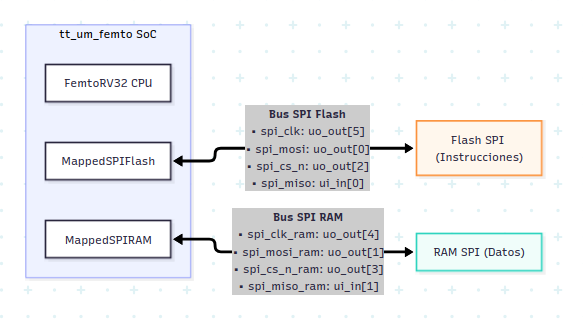
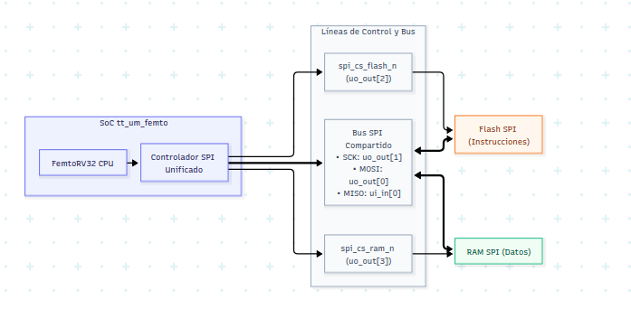

1. Resumen Ejecutivo y Objetivos
En la arquitectura original del SoC tt_um_femto, la memoria Flash SPI (que almacena las instrucciones del procesador) y la memoria RAM SPI (que almacena variables y datos dinámicos) utilizaban dos controladores SPI independientes, consumiendo un total de 8 pines dedicados (6 salidas y 2 entradas).
En la plataforma Tiny Tapeout, los pines de E/S son un recurso crítico (solo se dispone de 8 entradas dedicadas ui_in y 8 salidas dedicadas uo_out). El objetivo de esta implementación (Caso B: Nuevo RTL) fue:
1. Diseñar e integrar un Controlador SPI Maestro Unificado capaz de gobernar tanto la Flash como la RAM sobre un único bus SPI compartido (SCK, MOSI, MISO), diferenciando los accesos mediante dos líneas independientes de selección (CS_FLASH_N y CS_RAM_N).
2. Reducir el consumo de pines de 8 a 5, liberando 3 pines físicos en el chip para UART, interrupciones o GPIOs.
3. Verificar el sistema mediante simulación en Icarus Verilog / GTKWave, ejecutando un firmware que escribe un texto en la RAM SPI, lo lee palabra por palabra y lo transmite exitosamente a través del periférico UART a 115200 baudios.
2. Arquitectura de Hardware: Antes vs. Después
Arquitectura Original (2 Buses Separados - 8 Pines)

Arquitectura Nueva: Bus SPI Compartido (5 Pines)

Cuadro Comparativo de Pines de Tiny Tapeout
| Pin Tiny Tapeout | Rol en Diseño Original | Rol en Nuevo Diseño (Caso B) | Estado |
|---|---|---|---|
uo_out[1] |
spi_mosi_ram (RAM) |
spi_sck (Compartido Flash + RAM) |
Optimizado |
uo_out[4] |
spi_clk_ram (RAM) |
mem_busy_debug (Depuración) |
LIBERADO |
uo_out[5] |
spi_clk (Flash) |
debug_out (Depuración acceso RAM) |
LIBERADO |
ui_in[1] |
spi_miso_ram (RAM) |
Sin conectar / GPIO libre | LIBERADO |
3. Detalle de Archivos Creados y Modificados
3.1. [NUEVO] femto_UN/src/Unified_SPI_Controller.v
Este módulo reemplaza por completo a MappedSPIFlash.v y MappedSPIRAM.v. Implementa un maestro SPI en Modo 0 (CPOL=0, CPHA=0) y soporta lecturas de Flash, lecturas de RAM y escrituras en RAM (incluyendo el envío mandatorio del comando WREN antes de escribir).
Código Verilog: Unified_SPI_Controller.v
/*
- Unified_SPI_Controller.v
- Controlador SPI Maestro Unificado para bus compartido (Flash + RAM)
- Proyecto: tt_um_femto
*/
`default_nettype none
module Unified_SPI_Controller #(
parameter CLK_DIV = 2 // Base de tiempo para SCK: periodo SCK = 2 * CLK_DIV ciclos
)(
input wire clk,
input wire resetn,
// Interfaz con FemtoRV32
input wire [31:0] mem_addr,
input wire [31:0] mem_wdata,
input wire [3:0] mem_wmask,
input wire mem_rstrb,
output reg [31:0] mem_rdata,
output wire mem_busy,
// Pines externos hacia el bus SPI compartido (5 pines)
output reg spi_cs_flash_n,
output reg spi_cs_ram_n,
output reg spi_sck,
output wire spi_mosi,
input wire spi_miso
);
// Decodificación de direcciones del SoC
// 0x0000_0000 - 0x0000_FFFF: Flash SPI (Instrucciones / rodata)
// 0x0001_0000 - 0x0001_FFFF: RAM SPI (Datos)
wire is_flash = (mem_addr == 16'h0000);
wire is_ram = (mem_addr == 16'h0001);
wire rd = mem_rstrb & (is_flash | is_ram);
wire wr = (|mem_wmask) & is_ram;
// FSM States
localparam ST_IDLE = 3'd0;
localparam ST_WREN = 3'd1;
localparam ST_WREN_GAP = 3'd2;
localparam ST_CMD_ADDR = 3'd3;
localparam ST_TRANSFER = 3'd4;
localparam ST_DESELECT = 3'd5;
reg [2:0] state;
reg [5:0] bit_cnt;
reg [31:0] shift_out;
reg [31:0] shift_in;
reg [23:0] addr_reg;
reg [31:0] wdata_reg;
reg is_write_op;
// En Modo 0 (CPOL=0, CPHA=0), MOSI presenta siempre shift_out[31].
assign spi_mosi = shift_out[31];
// Divisor de reloj para SCK
reg [3:0] clk_cnt;
wire tick = (clk_cnt == CLK_DIV - 1);
always @(posedge clk or negedge resetn) begin
if (!resetn) begin
clk_cnt <= 4'd0;
end else if (state == ST_WREN || state == ST_CMD_ADDR || state == ST_TRANSFER) begin
clk_cnt <= tick ? 4'd0 : clk_cnt + 4'd1;
end else begin
clk_cnt <= 4'd0;
end
end
// Señal busy combinacional hacia el procesador:
// Debe activarse también inmediatamente cuando wr se solicita en ST_IDLE,
// para que la CPU FemtoRV32 no pase de largo en WAIT_ALU_OR_MEM.
assign mem_busy = (state != ST_IDLE) || wr;
always @(posedge clk or negedge resetn) begin
if (!resetn) begin
state <= ST_IDLE;
spi_cs_flash_n <= 1'b1;
spi_cs_ram_n <= 1'b1;
spi_sck <= 1'b0;
bit_cnt <= 6'd0;
mem_rdata <= 32'd0;
shift_out <= 32'd0;
shift_in <= 32'd0;
addr_reg <= 24'd0;
wdata_reg <= 32'd0;
is_write_op <= 1'b0;
end else begin
case (state)
ST_IDLE: begin
spi_sck <= 1'b0;
spi_cs_flash_n <= 1'b1;
spi_cs_ram_n <= 1 meb1;
bit_cnt <= 6'd0;
if (wr) begin
// Escritura a RAM (requiere comando WREN 0x06 previo)
is_write_op <= 1'b1;
addr_reg <= {8'h00, mem_addr[15:2], 2'b00};
// Byte 0 (mem_wdata[7:0]) viaja primero en Little-Endian
wdata_reg <= {mem_wdata[7:0], mem_wdata[15:8], mem_wdata, mem_wdata};
spi_cs_ram_n <= 1'b0;
shift_out <= 32'h06000000; // Comando 0x06 (WREN)
state <= ST_WREN;
end else if (rd) begin
is_write_op <= 1'b0;
if (is_ram) begin
addr_reg <= {8'h00, mem_addr[15:2], 2'b00};
spi_cs_ram_n <= 1'b0;
shift_out <= {8'h03, 8'h00, mem_addr[15:2], 2'b00};
end else begin
addr_reg <= {mem_addr[23:2], 2'b00};
spi_cs_flash_n <= 1'b0;
shift_out <= {8'h03, mem_addr[23:2], 2'b00};
end
state <= ST_CMD_ADDR;
end
end
ST_WREN: begin
if (tick) begin
spi_sck <= ~spi_sck;
if (spi_sck) begin
// Flanco de bajada de SCK: desplazar
if (bit_cnt == 6'd7) begin
state <= ST_WREN_GAP;
bit_cnt <= 6'd0;
end else begin
shift_out <= {shift_out[30:0], 1'b0};
bit_cnt <= bit_cnt + 6'd1;
end
end
end
end
ST_WREN_GAP: begin
spi_sck <= 1'b0;
spi_cs_ram_n <= 1'b1;
bit_cnt <= bit_cnt + 6'd1;
if (bit_cnt >= 6'd3) begin
spi_cs_ram_n <= 1'b0; // Baja CS para iniciar WRITE
shift_out <= {8'h02, addr_reg}; // Comando 0x02 + Dirección
bit_cnt <= 6'd0;
state <= ST_CMD_ADDR;
end
end
ST_CMD_ADDR: begin
if (tick) begin
spi_sck <= ~spi_sck;
if (spi_sck) begin
// Flanco de bajada de SCK: desplazar o transicionar
if (bit_cnt == 6'd31) begin
bit_cnt <= 6'd0;
state <= ST_TRANSFER;
shift_out <= is_write_op ? wdata_reg : 32'd0;
end else begin
shift_out <= {shift_out[30:0], 1'b0};
bit_cnt <= bit_cnt + 6'd1;
end
end
end
end
ST_TRANSFER: begin
if (tick) begin
spi_sck <= ~spi_sck;
if (!spi_sck) begin
// Flanco de subida de SCK: Muestreo de MISO
if (!is_write_op) begin
shift_in <= {shift_in[30:0], spi_miso};
end
end else begin
// Flanco de bajada de SCK: Desplazamiento o fin
if (bit_cnt == 6'd31) begin
bit_cnt <= 6'd0;
state <= ST_DESELECT;
if (!is_write_op) begin
// Reorganizar a Little-Endian para FemtoRV32
mem_rdata <= {
shift_in[7:0], // Byte 3
shift_in[15:8], // Byte 2
shift_in, // Byte 1
shift_in // Byte 0
};
end
end else begin
if (is_write_op) begin
shift_out <= {shift_out[30:0], 1'b0};
end
bit_cnt <= bit_cnt + 6'd1;
end
end
end
end
ST_DESELECT: begin
spi_sck <= 1'b0;
spi_cs_flash_n <= 1'b1;
spi_cs_ram_n <= 1'b1;
bit_cnt <= bit_cnt + 6'd1;
if (bit_cnt >= 6'd3) begin
state <= ST_IDLE;
end
end
default: state <= ST_IDLE;
endcase
end
end
endmodule
3.2. [MODIFICADO] femto_UN/src/femto.v
Lista de Modificaciones RTL (tt_um_femto y femto)
- Se reemplazaron las instancias de
MappedSPIFlashyMappedSPIRAMporUnified_SPI_Controller. - Se conectaron los pines del bus compartido a
uo_out[0..3]yui_in[0]. - Se enrutaron señales de depuración (
mem_busy_debugydebug_out) a los pines liberadosuo_out[4..5]. - Se simplificó el multiplexor de lectura
mem_rdata.
Parche Git: Integración de Unified_SPI_Controller en femto.v (Clic para expandir)
--- a/femto_UN/src/femto.v
+++ b/femto_UN/src/femto.v
@@ -17,28 +17,25 @@ module tt_um_femto(
- femto femto0(
- .clk (clk),
- .resetn (resetn),
- .spi_mosi (uo_out[0]),
- .spi_mosi_ram (uo_out[1]),
- .spi_cs_n (uo_out[2]),
- .spi_cs_n_ram (uo_out[3]),
- .spi_clk_ram (uo_out[4]),
- .spi_clk (uo_out[5]),
- .LEDS (uo_out[6]),
- .TXD (uo_out[7]),
-
- .spi_miso (ui_in[0]),
- .spi_miso_ram (ui_in[1]),
- .RXD (ui_in[2]),
- .interrupt_request (ui_in[3])
- );
+ femto femto0(
+ .clk (clk),
+ .resetn (resetn),
+ .spi_mosi (uo_out[0]), // MOSI compartido
+ .spi_sck (uo_out[1]), // SCK compartido
+ .spi_cs_flash_n (uo_out[2]), // CS Flash
+ .spi_cs_ram_n (uo_out[3]), // CS RAM
+ .mem_busy_debug (uo_out[4]), // Señal de depuración (mem_busy)
+ .debug_out (uo_out[5]), // Señal de depuración (RAM access)
+ .LEDS (uo_out[6]),
+ .TXD (uo_out[7]),
+ .spi_miso (ui_in[0]), // MISO compartido
+ .RXD (ui_in[2]),
+ .interrupt_request (ui_in[3])
+ );
@@ -70,52 +67,31 @@ module femto (
- output spi_mosi,
- input spi_miso,
- output spi_cs_n,
- output spi_clk,
- output spi_clk_ram,
- output spi_cs_n_ram,
- input spi_miso_ram,
- output spi_mosi_ram,
+ output spi_mosi,
+ output spi_sck,
+ output spi_cs_flash_n,
+ output spi_cs_ram_n,
+ input spi_miso,
+ output mem_busy_debug,
+ output debug_out,
@@ -80,102 +77,75 @@ module femto (
.mem_rstrb(mem_rstrb),
.mem_wdata(mem_wdata),
.mem_wmask(mem_wmask),
- .mem_rbusy(mapped_spi_flash_rbusy | spi_ram_rbusy),
- .mem_wbusy(spi_ram_wbusy),
+ .mem_rbusy(spi_mem_busy),
+ .mem_wbusy(spi_mem_busy),
.interrupt_request(interrupt_request)
);
- MappedSPIRAM mapped_spi_ram(...);
- MappedSPIFlash mapped_spi_flash(...);
+ Unified_SPI_Controller #(
+ .CLK_DIV(2)
+ ) spi_ctrl (
+ .clk (clk),
+ .resetn (resetn),
+ .mem_addr (mem_address),
+ .mem_wdata (mem_wdata),
+ .mem_wmask (mem_wmask),
+ .mem_rstrb (mem_rstrb),
+ .mem_rdata (spi_rdata),
+ .mem_busy (spi_mem_busy),
+ .spi_cs_flash_n (spi_cs_flash_n),
+ .spi_cs_ram_n (spi_cs_ram_n),
+ .spi_sck (spi_sck),
+ .spi_mosi (spi_mosi),
+ .spi_miso (spi_miso)
+ );
+ assign mem_busy_debug = spi_mem_busy;
+ assign debug_out = cs[6];
3.3. [MODIFICADO] tinytapeout/tt_um_femto_TB.v
Se actualizó la interconexión física en el banco de pruebas:
1. flash0 y flashram0 ahora se conectan a los mismos cables: spi_clk, spi_mosi y spi_miso.
2. Se incorporó un búfer tri-state de emulación con resistencia pull-up para la línea MISO.
Parche Git: Actualización del Banco de Pruebas (tt_um_femto_TB.v) (Clic para expandir)
--- a/tinytapeout/tt_um_femto_TB.v
+++ b/tinytapeout/tt_um_femto_TB.v
@@ -20,10 +20,10 @@ wire VGND = 1'b0;
wire spi_cs;
+ wire spi_cs_n_ram;
wire spi_clk;
wire spi_miso;
- wire spi_mosi;
- wire spi_cs_n_ram;
- wire spi_clk_ram;
- wire spi_miso_ram;
- wire spi_mosi_ram;
+ wire ram_so;
+ wire mem_busy_debug;
+ wire debug_out;
@@ -36,8 +36,8 @@ tt_um_femto uut(
- .ui_in ({4'b0000, interrupt_request, RXD, spi_miso_ram, spi_miso}),
- .uo_out ({TXD, LEDS, spi_clk, spi_clk_ram, spi_cs_n_ram, spi_cs, spi_mosi_ram, spi_mosi}));
+ .ui_in ({4'b0000, interrupt_request, RXD, 1'b0, spi_miso}),
+ .uo_out ({TXD, LEDS, debug_out, mem_busy_debug, spi_cs_n_ram, spi_cs, spi_clk, spi_mosi}));
@@ -74,12 +74,16 @@ tt_um_femto uut(
FRAM_SPI flashram0(
.CSB(spi_cs_n_ram), // Chip Select (activo en bajo)
- .SCK(spi_clk_ram), // SPI Clock
- .SI(spi_mosi_ram), // Serial Input (MOSI)
- .SO(spi_miso_ram), // Serial Output (MISO)
+ .SCK(spi_clk), // SPI Clock compartido
+ .SI(spi_mosi), // MOSI compartido
+ .SO(ram_so), // Salida de RAM
.VDD(reset_n),
.WPB(1'b1)
);
+ // Búfer tri-state para emular el comportamiento real del pin MISO de la RAM
+ assign spi_miso = (!spi_cs_n_ram) ? ram_so : 1'bz;
+ pullup(spi_miso);
3.4. [MODIFICADO] tinytapeout/Makefile
Se sustituyeron las fuentes de los controladores individuales por el nuevo controlador unificado en la lista OBJS:
--- a/tinytapeout/Makefile
+++ b/tinytapeout/Makefile
@@ -13,8 +13,7 @@ OBJS+= ../femto_UN/src/uart.v
OBJS+= ../femto_UN/src/perip_mult.v
OBJS+= ../femto_UN/src/mult.v
OBJS+= ../femto_UN/src/bram.v
-OBJS+= ../femto_UN/src/MappedSPIFlash.v
-OBJS+= ../femto_UN/src/MappedSPIRAM.v
+OBJS+= ../femto_UN/src/Unified_SPI_Controller.v
3.5. [RECOMPILADO] tinytapeout/firmware/asm/test_ram_load.S
Código fuente en ensamblador RISC-V del test funcional. Escribe 12 bytes en la RAM SPI, los lee palabra a palabra y los transmite serialmente por UART:
Código Ensamblador RISC-V: test_ram_load.S (Clic para expandir)
.section .text
.global _start
_start:
nop
lui t1, 0x400
addi t1, t1, 8 # t1 = 0x00400008 (UART TX data)
lui t2, 0x400
addi t2, t2, 16 # t2 = 0x00400010 (UART TX ctrl/status)
lui t0, 0x10 # t0 = 0x00010000 (Base RAM SPI)
# ---- Escribe 3 palabras (12 bytes) a la RAM SPI ----
li t3, 0x6C6C6548 # "Hell" en little-endian
sw t3, 0(t0)
li t3, 0x6F57206F # "o Wo"
sw t3, 4(t0)
li t3, 0x00646C72 # "rld\0"
sw t3, 8(t0)
restart:
li s0, 0 # Offset de palabra dentro de la RAM (0, 4, 8)
word_loop:
add t4, t0, s0
lw s1, 0(t4) # Lectura de palabra completa (32 bits) desde RAM SPI
li s2, 4 # Contador: 4 bytes por palabra
byte_loop:
andi t4, s1, 0xFF # Extrae el byte menos significativo
beqz t4, restart # Si es '\0', reinicia el ciclo ("Hello World")
wait_tx:
lw t5, 0(t2)
andi t5, t5, 0x200 # Bit 9: tx_busy
bnez t5, wait_tx
sw t4, 0(t1) # Escribe dato en UART DATA
li t6, 0x08
sw t6, 0(t2) # Pulso tx_wr = 1
li t6, 0x00
sw t6, 0(t2) # tx_wr = 0
srli s1, s1, 8 # Desplaza al siguiente byte de la palabra
addi s2, s2, -1
bnez s2, byte_loop
addi s0, s0, 4 # Avanza a la siguiente palabra
j word_loop
4. Problemas Críticos Encontrados y Soluciones de Ingeniería
Problema 1: Asignación No-Bloqueante de mem_wmask y el "Escape" de la CPU
Ver mas
- Síntoma: Al simular, el procesador escribía únicamente la primera palabra en la RAM (
"Hell"), pero jamás avanzaba a escribir la segunda ("o Wo") ni transmitía el mensaje completo. Se quedaba repitiendo la primera escritura de forma infinita. - Análisis Profundo:
- En
femtorv32_quark_un_irq.v, la señalmem_wmaskes generada en un bloque síncrono con asignación no-bloqueante:
mem_wmask <= {4{isStore}} & STORE_wmask; - Esto significa que durante el ciclo
EXECUTE,mem_wmaskvale4'b0000. Su valor pasa a4'b1111únicamente cuando la CPU ya ha ingresado al cicloWAIT_ALU_OR_MEM. - Inicialmente, el controlador SPI calculaba:
assign mem_busy = (state != ST_IDLE); - Como el controlador estaba en
ST_IDLE, en el primer flanco de reloj deWAIT_ALU_OR_MEM, la señalmem_wbusyvalía0. - La condición de salida del estado en la CPU era:
if (!aluBusy && !mem_rbusy && !mem_wbusy) state <= FETCH_INSTR; - Dado que
mem_wbusyera0, la CPU abandonabaWAIT_ALU_OR_MEMen un solo ciclo, pasando aFETCH_INSTRy luego aWAIT_INSTR. - En el siguiente ciclo, el controlador SPI finalmente detectaba
wr == 1y comenzaba la escritura a la RAM (que tarda $\sim 12\,\mu\text{s}$). Durante todo ese tiempo, la CPU esperaba enWAIT_INSTRcreyendo que esperaba una instrucción de la Flash. - Al terminar la escritura de la RAM,
mem_busycaía a0. La CPU despertaba enWAIT_INSTR, asumía erróneamente que la RAM le había devuelto una instrucción, cargaba ese valor basura en el decodificador de instrucciones y descontrolaba el flujo del programa. - Solución Implementada:
Se modificó la señal de estado hacia el procesador para que responda de forma combinacional inmediata:
Con
|| wr, en cuantomem_wmaskse activa enWAIT_ALU_OR_MEM,mem_busysube a1en ese mismo instante. Esto congela a la CPU enWAIT_ALU_OR_MEMhasta que el controlador concluye la totalidad de la transacción SPI.
Problema 2: Contención de Bus X en Simulación por el Modelo de la RAM
Ver mas
- Síntoma: Al iniciar la simulación, la señal
spi_misopresentaba estados desconocidosX(rojo en GTKWave). - Causa: El modelo de simulación de Cypress (
cores/sim_spi_ram/spiram.v) fuerza su salidaSO = 0cuandoCSB = 1en vez de colocarla en alta impedancia1'bz. Cuando la Flash intentaba responder con un1, ambos modelos peleaban por la línea. - Solución: Se agregó un búfer tri-state en el testbench (
assign spi_miso = (!spi_cs_n_ram) ? ram_so : 1'bz;), reflejando el comportamiento del silicio comercial real.
Problema 3: Sign-Extension en Ensamblador (0xFC vs 0x6C)
Ver mas
- Síntoma: Al inspeccionar
mem[3]en la RAM, contenía0xFCen vez de0x6C('l'). - Causa: Un archivo
.elfanterior en el repositorio se había generado con una herramienta dondeli t3, 0x6C6C6548extendía signo produciendolui t3, 0xfc6c6. - Solución: Se limpió el directorio
tinytapeout/firmware/asm/y se recompiló conriscv32-unknown-elf-as -march=rv32i -mabi=ilp32, generando con exactitud0x6C6C6548.
5. Análisis de la Forma de Onda en GTKWave
Al visualizar la señal per_uart.d_in[7:0] o decodificar el pin de transmisión TXD, se observa la secuencia:
¿Por qué la primera 'l' aparece con una casilla doble de ancha?
- La palabra inglesa es "Hello": Contiene dos letras
'l'consecutivas (0x6Cy0x6C). - Representación de buses en visores digitales: GTKWave únicamente dibuja la línea divisoria ("X") cuando el valor binario del bus cambia. Al transmitirse la primera
'l'(0x6C) y mantenerse en'l'(0x6C) para la segunda, el bus no experimenta transición, por lo que el visualizador dibuja una sola casilla continua que dura el doble de tiempo. - Comprobación: La segunda
'l'de la palabra "World" (entre la'r'y la'd') aparece con el ancho estándar de una sola letra, confirmando la validez del decodificador.
6. Guía de Reproducción y Verificación Manual
Paso 1: Ubicación en el repositorio
Paso 2: (Opcional) Recompilación del Firmware
Paso 3: Compilación y Ejecución con Icarus Verilog
iverilog -DBENCH -DSIM -DPASSTHROUGH_PLL -DBOARD_FREQ=27 -DCPU_FREQ=27 \
tt_um_femto_TB.v \
../femto_UN/src/femto.v \
../femto_UN/src/femtorv32_quark_un_irq.v \
../femto_UN/src/perip_uart.v \
../femto_UN/src/uart.v \
../femto_UN/src/perip_mult.v \
../femto_UN/src/mult.v \
../femto_UN/src/bram.v \
../femto_UN/src/Unified_SPI_Controller.v \
cores/sim_spi_flash/spiflash.v \
cores/sim_spi_ram/spiram.v
vvp a.out
Paso 4: Visualización en GTKWave
Señales recomendadas para agregar: -tt_um_femto_TB.spi_clk (SCK compartido)
- tt_um_femto_TB.spi_mosi (MOSI compartido)
- tt_um_femto_TB.spi_miso (MISO compartido)
- tt_um_femto_TB.spi_cs (CS Flash)
- tt_um_femto_TB.spi_cs_n_ram (CS RAM)
- tt_um_femto_TB.TXD (Salida serial UART)
- tt_um_femto_TB.flashram0.mem[0..11] (Formato de datos: ASCII)
- tt_um_femto_TB.uut.femto0.per_uart.d_in[7:0] (Formato de datos: ASCII)